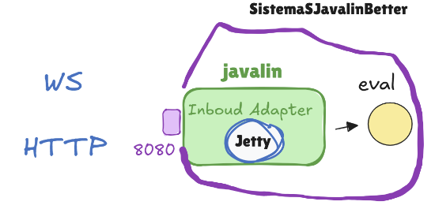

GIT repo: https://github.com/GregorioBussolari/iss2026Unibo.git
GIT repo: https://github.com/GregorioBussolari/iss2026Unibo.git
sin(x) + cos(√3 · x)
1. Realizzare un servizio Java che calcoli i valore corrispondente di una espressione data
2. Un utente deve essere in grado di ricevere il valore corrispondente al valore x richiesto
3. La ricezione deve avvenire via WebSocket, ma anche HTTP1 e HTTP2
4. Il deployment del gioco deve avvenire mediante Docker.

//on init test della connessione WS
callWS("0.0")
//test HTTP Post/Get
testHTTPGet()
testHTTPPost()
Test della connessione WebSocket
function callWS(msgtosend){
/*1*/const socketWS =
new WebSocket("ws://localhost:8080/eval");
/*2*/socketWS.onopen = () => {
console.log("callWS | Connesso a eval");
socketWS.send(msgtosend);
}
/*3*/socketWS.onmessage = (event) => {
console.log("callWS | onmessage:",event.data);
}
}//callWS
Testing HTTP get in javascript
async function testHTTPGet() {
try {
const url = 'http://localhost:8080/eval?x=-4';
const response = await fetch(url);
// Controlla se il server ha risposto con un errore (es. 404 o 500)
if (!response.ok) {
throw new Error(`Errore del server: ${response.status}`);
}
//const data = await response ;
const data = await response.json(); // Converte la risposta da JSON a oggetto JS
console.log('testHTTPGet | Dati ricevuti con successo:', data);
} catch (error) {
console.error('testHTTPGet | Errore:', error);
}
}
Testing HTTP post in javascript
async function testHTTPPost() {
try {
const url = 'http://localhost:8080/evaluate';
const response = await fetch(url, {
method: 'POST', // Specifica il metodo
headers: {
'Content-Type': 'application/json' // Dice al server che stiamo inviando JSON
// 'Authorization': 'Bearer IL_TUO_TOKEN' // Aggiungi questo se serve autenticazione
},
body: JSON.stringify({ x : 4.0 }) // Converte l'oggetto JS in una stringa JSON
});
console.log('testHTTPPost | Sent:' );
const result = await response.json();
console.log('testHTTPPost | result=', result);
} catch (error) {
console.error('testHTTPPost | Errore durante il caricamento:', error);
}
}
GIT repo: https://github.com/GregorioBussolari/iss2026Unibo.git